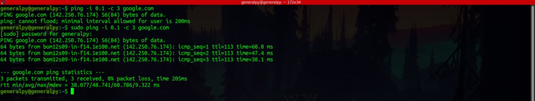
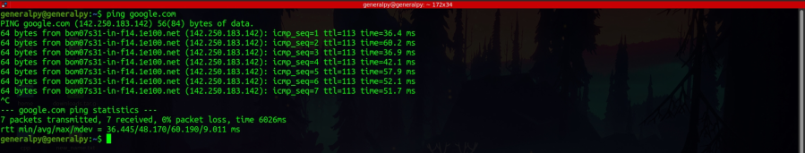

Testing and troubleshooting network
When it comes to troubleshooting the network, the first command to come into mind must be ping. The ping command sends out icmp echo request packets which when reached at host are replied by the icmp reply. If reply is received, we can confirm that the host is reachable.
ping domain_name/ip_address
This will send ping request packets until we press ctrl+c to interupt.
One ip address can be associated with multiple domain names thus here we are getting a different domain name with the same ip in ping as ping first performs reverse dns lookup. To prevent reverse dns lookup, we can use -n flag.
To send n number of packets instead of unlimited packets, we use -c flag followed by the number of packets.

Let us understand what each line in ping output means.
The 64 bytes at the beginning is the packet size, icmp_seq is the sequence of packets which also determines route taken by the packets and sometimes can be used to troubleshoot problems. If icmp_seq is different like 1,3,2,5,4 then it means that packets are coming thru different routes which cannot be changed usually. ttl is the time to live which is the number of hops or routers the packet travelled and time also k/a round trip time(rtt) is the time taken for one round trip . rtt below 30 ms is a very fast connection. High rtt means connection cannot be used for services like voice communication or voip.
By default, each icmp echo packet is sent at an interval of 1 second. We can change this behaviour by using -i flag. Note that only sudo user can send packets with interval less than 0.2 s.

We can use -q flag to only get summary of the ping.
We can use -t option to configure ttl of the packet. When a machine receives packet with ttl 1, it discards it and returns a time limit exceded packet(ttl is reduced at each hop). So we can manipulate this behaviour to know the path of our packet.

ttl of 1 means our packet will only reach till our router(default gateway), 2 means one hop above our default gateway and so on.
To troubleshoot any network, we can follow below mentioned steps :
1. Ping your default gateway.
If you cannot ping your router, then either your router is dropping your packets, your ip is not configured correctly, network config is wrong and variety of reasons.
2. Ping a public and stable dns like google dns 8.8.8.8 or cloudflare dns 1.1.1.1.
If we don't get any reply here, either dns server is not configured correctly or our network is not configured properly.
3. Ping a stable and public domain like google.com

If there is a problem here, either there is a problem with dns config, or host might be down or there can be problem in our own network.
Sometimes firewalls also block ping probes.